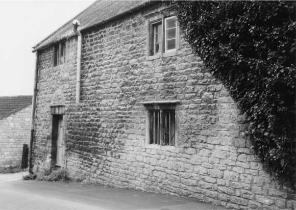

Type of building:
Industrial
Listing:
Grade ll
Plan and elevation:
Single pile. Two-storey
Summary of the probable main building
history:
Late 17th Century - early 18th Century

The property viewed from the north
Exterior:
A long building approximately 26m in length and built gable end into a relatively
steep north-south slope towards the river. Thus the south gable end of the structure
is at a substantially lower level than the north gable end. The building is constructed
of coursed and squared rubble stone with heavy dressed stone quoins on the south
end. It is on two-storeys and has a pitched roof presently covered in corrugated
sheeting. The north gable end is bonded into the building immediately adjacent
which shows signs that the bonding was intended to go beyond the height of the
present two storeys.
The building is flanked by minor roads, both cul-de-sacs. The west long elevation is obscured by a large modern workshop although a modern dormer window is discernible. The east long elevation has seven windows. There is believed to be an eighth window, which, however, is presently obscured by ivy and not observable from the exterior. This is understood to be an inserted modern steel framed casement window, as are two of the seven. The other five windows are two-light mullions of ogee section and under straight drip labels. Of these two are on the ground floor (one being blocked), two on the first floor and one, at the south end above the entry, at a somewhat higher level. The number of mullion windows would appear to be inadequate to light such a long structure although the west elevation may originally have fared better. The metal framed windows are out of line with the mullion windows but light the modern re-arranged floors which were inserted to increase headroom without regard to the positioning of the mullions. Wall thickness as measured through a ground floor mullion window is about 53 cms. The present principal entry is in the west elevation although the former principal entry would appear to be in the east elevation. This latter entry is approached by steps. The doorcase is of plain dressed stone surmounted with a straight drip label to echo the windows and with a relieving arch above. At the north end there is a blocked opening with a timber lintel over. This appears to be a former inserted entry. It is probable that the adjoining road was at one time of a different profile, most likely it was terraced and linked with steps and on the same level as the row of terrace cottages on the opposite side of the road. The 1840 Tithe Map indicates that there was no vehicular access to this road, whatever the situation at an earlier date. The return south elevation or gable end has a ground floor and a first floor window, both two-light ogee section mullions under straight drip labels. To the left at ground floor level there is an entry with a relieving arch above, partially obscured by the porch of the adjoining house.
Date & development:
The early history of the building is obscure. According to a sales advertisement
of 1841, the property was described as a malthouse held on leasehold with 500
years unexpired at a peppercorn rent; the same lease and sub-leases, indeed, as
for the nearby properties ref. BE 014/015, which date back to 1596. It is improbable
that the building is of this age but like BE 014/015 it may have been originally
detached with its gable end to the main street. However, the eastern doorcase
and mullion windows are no older than the late 17th or early 18th centuries. As
such it is unlikely that the building operated as a commercial malthouse. The
building later became part of the Batheaston Brewery complex, reputedly established
in 1792 (Bone, p.120) and owned by John Smith (1840 Tithe Apportionment Schedule)
who had other interests in the brewing industry in Bath (Bone, p.109). It was
probably under the ownership of John Smith that the building was converted into
a malthouse and could be described as “A two floor malthouse erected by
its late owner within the last two years” in the 1841 sales particulars
(see Quentin Alder).
The Batheaston Brewery closed in 1870. Sometime after 1878 the building was acquired by the Batheaston and S. Catherine’s Working Men’s Association (Dobbie p. 72); the ground floor became a drill hall for the 14th Avondale Rifle Volunteers, above were rooms for bagatelle or billiards, reading and smoking. Sometime thereafter, the building reverted to commercial-industrial usages, most recently as plasterworks.
References and bibliography:
- Batheaston Tithe Map and Apportionment Schedule, 1840, Somerset Record Office
- M. Bone “The Rise and Fall of Bath’s Breweries: 1736-1960”
in Bath History, Vol Vlll, 2000, Millstream Books
- B.M. Willmott Dobbie “An English Rural Community”, Bath University
Press, 1969
- Quentin Alder “Report on the History of Avonvale Place Malthouse, Batheaston”
September, 2001, in the Batheaston Society archives
The drawings which accompany this report are reproduced with the permission of
Quentin Alder, Architect, Bristol. The permission is gratefully acknowledged.
Reference Pictures
| Doorcase in the east elevation | Detail of mullion window in the east elevation |
Survey Drawings
| East elevation | Ground floor plan | Longitudinal section EE |
| Presumed arrangement in about 1840 and as existing 2001 |